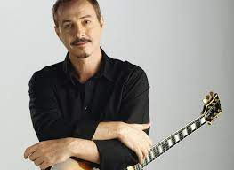

| Nombre completo | Fecha de nacimiento | Lugar de nacimiento | Instrumentos | Perfil | |
|---|---|---|---|---|---|
| Pedro Aznar | 23 de julio de 1959 | Buenos Aires, Argentina. | Voz, bajo, bajo acústico, quena, Erque, mandolina, requinto, charango, acordeón, guitarra, teclados, piano, ukelele, contrabajo, saxofón tenor, melódica, percusión. | Cantante, multiinstrumentista, compositor y poeta argentino. Fue integrante de los grupos Madre Atómica, Alas, Serú Girán, Spinetta Jade y Pat Metheny Group y desde 1993 está dedicado por completo a su carrera como solista. |  |